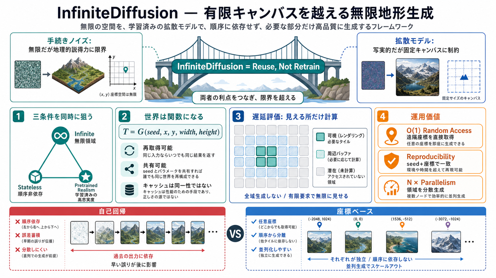

Procedural Noise
無限に計算できる
座標から直接値を求められ、軽量で再現性も高い。一方、局所ノイズの組み合わせだけでは、大陸・海溝・山系の意味ある構造を作りにくい。

SIGGRAPH 2026 / Reading Deck
拡散モデルの写実性と、手続き生成の無限性を同時に得る。座標とシードで再現可能な地形生成へ、設計思想・実装価値・未検証点を整理する。
The Missing Bridge
Perlinノイズはどこまでも生成できるが、地理的な説得力に限界がある。拡散モデルは高品質だが、通常は固定キャンバスと全体状態に縛られる。
Procedural Noise
座標から直接値を求められ、軽量で再現性も高い。一方、局所ノイズの組み合わせだけでは、大陸・海溝・山系の意味ある構造を作りにくい。
Diffusion Model
学習済み分布から高忠実度な画像や地形表現を得られる。ただし固定解像度、キャンバス境界、全体サンプリングが実運用の制約になる。
Desired System
無限世界の任意座標を、要求時に同じ結果で取得する。InfiniteDiffusionは、この欠けていた橋を既存モデルの変換で構築する。
A Three-Way Constraint
著者が提示する核心は、無限性・ステートレス性・学習済みリアリズムのトリレンマである。InfiniteDiffusionは選択ではなく同時達成を狙う。
Infinite
世界の端を事前に決めず、任意の世界座標へ生成領域を拡張できる。
Stateless
過去の生成順序や隣接チャンクの保存状態を、結果の唯一の根拠にしない。
Pretrained Realism
既存の拡散モデルが持つ表現力を、無限化のために捨てない。
Reuse, Not Retrain
InfiniteDiffusionはtraining-free（追加学習不要）を掲げる。有限キャンバス向けの拡散過程を、座標窓ごとに要求できる遅延計算へ再解釈する。
Input Asset
既存の重みと生成能力を再利用し、無限化のための追加データセットや再学習を避ける。
Reparameterize
要求領域に必要なノイズと推論だけを構成し、世界全体を一枚のテンソルとして保持しない。
Result
有限計算の繰り返しから、任意座標にアクセスできる一貫した無限領域を見せる。
Seed + Coordinates
同一のランダムシードと世界座標を渡せば、生成順序に関係なく同じ結果を得る。世界の同一性は巨大ファイルではなく、入力規則へ圧縮される。
Conceptual Function
Tは要求された地形窓。キャッシュが消えても、同じseedと座標から同一結果を再構成できることが設計目標となる。
東から生成しても、西から生成しても座標の結果は変わらない。
破棄したチャンクを、後から同じ内容で取り戻せる。
シードと規則を共有すれば、複数環境で同じ世界を指せる。
Compute Only What Is Seen
無限世界を先に作る必要はない。プレイヤー、カメラ、シミュレーションが要求した有限窓だけを計算し、残りは未評価のまま保つ。
Operational Consequences
主張される利点は単なる無限出力ではない。任意地点への直接アクセス、完全再現、独立実行がゲーム運用の構造を変える。
Random Access
原点から順番に生成せず、遠隔座標のチャンクを直接要求する。アクセスコストを既生成距離から切り離す。
Reproducibility
seed＋座標が同じなら、セッションや生成順序が異なっても同じ出力を返す設計を目指す。
Parallelism
逐次的な前領域依存を避け、複数GPU・複数ワーカー・複数クライアントへの分割を容易にする。
Autoregressive vs Coordinate-Based
Auto-Regressive（自己回帰）生成は連続性を作りやすい反面、順序依存と誤差蓄積を抱える。InfiniteDiffusionは座標を主語にして、その依存鎖を弱める。
Auto-Regressive
InfiniteDiffusion
Order Is No Longer the Scheduler
各ワーカーはseedと担当座標窓を受け取り、独立して地形を生成できる。同期対象は逐次履歴ではなく、モデル版・乱数規則・境界規則になる。
Worker A
−8, 4遠隔西側のチャンクを先に計算。
Worker B
0, 0スポーン地点を優先して計算。
Worker C
21, −3高速移動先を予測して先行計算。
Shared Contract
seed、座標系、モデル版、精度、境界処理を一致させる。
From Images to Elevation
対象は見た目だけの地形画像ではなく、深海から高山までを含む広い標高レンジである。一つの生成系が、大域構造と局所ディテールを接続する。
Low Elevation
Deep大きな負の標高と海底構造を同一表現内で扱う。
Planetary Continuity
Earth-scale千km〜万km級の流れを保持しながら、プレイ領域に必要な細部へ降りる。
High Elevation
High急峻な標高差と細かな起伏を同じ生成パイプラインへ統合する。
Context Before Detail
一つのチャンクだけを高精細にしても、広域地形としては不自然になり得る。階層的拡散は大陸級の構造を条件として、地域と局所の詳細を生成する。
Global Context
大陸、海洋、長大な山系、海溝など、地形全体の低周波な配置を決める。
Regional Form
流域、尾根、沿岸、盆地など、複数チャンクをまたぐ中間スケールを整える。
Local Detail
斜面、谷、侵食感、細かな起伏を、上位構造と矛盾しない範囲で追加する。
Laplacian Encoding
Laplacian encoding（ラプラシアン符号化）は、深海から高山までのダイナミックレンジを一度に背負わせない。粗い標高場と残差ディテールを階層ごとに表現する。
Conceptual Decomposition
Baseが大域的な標高傾向を持ち、各Δが段階的に細かな差分を加える。モデルはスケールごとの役割へ集中できる。
海陸分布や大陸規模の高さを表現。
山地、盆地、流域の形を補う。
尾根や谷、表面の細かな変化を加える。
Chunk-on-Demand Pipeline
ランタイムはプレイヤー周辺の必要チャンクを決め、座標窓を拡散系へ渡す。生成結果は描画・物理へ供給され、キャッシュは正解そのものではなく高速化層として働く。
Observe
カメラ、速度、視距離から必要範囲を予測。
Address
ワールド座標を安定したチャンクIDへ写像。
Generate
seedと窓に基づいて必要な標高を推論。
Integrate
メッシュ、衝突、LOD、描画資源へ変換。
Evict
遠方データを捨て、必要時に同じ内容を再生成。
Prototype Evidence
提供資料では軽量GPU上の実用性、9倍高速、3倍軌道速度での飛行が報告される。ただし、比較条件と再現手順が不足しているため数値は主張として読む必要がある。
Reported Speed
基準方式、解像度、品質設定、GPU条件の完全な対応表は提供情報から確認できない。
Flight Trajectory
移動に追随する生成能力を示すが、速度の定義と失敗率は追加確認が必要。
Engine Demo
チャンク生成、表示、飛行体験までを統合した実装可能性を示す。
Open Prototype
既存ゲームの世界生成系へ組み込む導線と、第三者検証の入口になる。
Why Games Care
決定論的な座標生成は、保存容量、配信、同期、再現テストの設計を簡素化し得る。特にマルチプレイでは、同じ生成規約を世界の共通参照にできる。
Single Player
巨大マップを事前構築せず、プレイヤー周辺から段階的に開く。
Multiplayer
seed・モデル版・規則を一致させ、複数ノードが同じ地形を参照する。
Streaming
キャッシュ破棄後も遠隔ストレージへ依存せず、再計算で復元できる。
Testing
問題地点をseed＋座標で固定し、再現試験と回帰テストへ利用する。
Determinism Is Engineered
再現性は「seedを固定する」だけでは完成しない。座標乱数、数値精度、境界処理、モデル更新の全層を決定論的な契約として管理する必要がある。
Coordinate PRNG
チャンクIDとseedから衝突しにくい乱数系列を作り、要求順序から独立させる。
Boundary Rule
隣接領域の文脈範囲、重み付け、ブレンド方法を固定し、継ぎ目を抑える。
Numerical Stack
GPU、演算精度、カーネル差で出力が変わる場合、許容誤差と同期方式を定義する。
Versioning
重みやサンプラーの更新で世界が変わらないよう、世界IDに実装版を含める。
Claim Strength
公開情報は設計の可能性とデモの実在を示す。一方、画質、速度、境界、長時間運用を横断する標準化されたベンチマークは追加で必要になる。
Where Infinite Can Fail
無限アクセスと地理的整合性は別の性質である。境界、流域、気候、洞窟、資源などが長距離で破綻しないかは、地形画像の品質とは別に検証すべきだ。
Seams
高低差、法線、侵食模様がチャンク端で微妙に食い違う可能性。
Long-Range Logic
川が海へ届くか、流域が閉じるか、山脈が意味ある連続性を持つか。
Edge Cases
極端な標高、特殊な座標、窓サイズの変化で異常地形が現れる可能性。
Extensions
洞窟、生態系、鉱床、建設適地を同じ決定論へ統合できるかは未確認。
Adoption Gates
最初から本番ワールドを置き換えるべきではない。再現性、品質、速度、ゲーム設計への適合を順番に閉じ、小規模プロトタイプから運用試験へ進む。
Reproduce
複数GPU、再起動、生成順序変更でも、許容範囲内で同じチャンクになるか。
Benchmark
平均値だけでなく、P95遅延、VRAM、同時要求、移動速度別の欠損率を計測。
Design Fit
安全地帯、進行導線、採掘資源、難易度、建設可能性を条件付けできるか。
Operate
キャッシュ、障害復旧、モデル更新、監視、マルチプレイ同期まで含めて検証。
Beyond Terrain
高品質な標高場だけでは、永続的なゲーム世界は完成しない。気候、生態系、資源、経済を同じ座標規約と因果階層へ接続できるかが戦略的な差になる。
Terrain
大域形状と局所ディテールの基盤。
Climate
緯度、標高、風、流域から環境を決定。
Ecology
気候と地形に整合する生息分布を生成。
Resources
地質と遊びの要件を両立した配置へ。
Economy
確定世界を動的シミュレーションへ接続。
Infinite Scale, Infinite Surface
シード共有型の無限世界は教育・研究・芸術表現を促進できる。同時に、所有権、フィルタリング、悪意ある利用、問題地点の通報と修正を設計段階から扱う必要がある。
Ownership
seed、モデル、生成地形、ユーザー改変の所有関係と利用範囲を明示する。
Moderation
座標単位の通報、再現、隔離、再生成を可能にする運用導線が必要。
Version Control
モデル修正で既存世界が変わる問題に、版固定や例外パッチで対応する。
Safety
公開サーバー、教育利用、研究利用ごとに許容範囲と監査責任を定める。
Assessment
InfiniteDiffusionの価値は、既存モデルの品質を保ちながら、無限・ランダムアクセス・決定論を一つの設計へ統合した点にある。現時点では強い研究プロトタイプであり、汎用本番採用には比較評価、失敗例、長時間運用データの公開拡充が必要だ。
Source & Scope Notes
本資料は、ユーザー提供の事前知識・要約・論点・FAQ・所見を圧縮した読解用デッキである。論文本文、リポジトリ、完全なベンチマーク表へのURLは提供情報に含まれないため、数値主張は独立検証していない。
Verification Boundary
# InfiniteDiffusion: Bridging Learned Fidelity and Procedural Utility for Open-World Terrain Generation. For decades, pr…
# InfiniteDiffusion: Bridging Learned Fidelity and Procedural Utility for Open-World Terrain Generation - Project Websit…
Dec 9, 2025 — At its core is InfiniteDiffusion, a novel algorithm for infinite generation, enabling seamless, real-time …
# Terrain Diffusion: A Diffusion-Based Successor to Perlin Noise in Infinite, Real-Time Terrain Generation. For decades,…
# Terrain Diffusion: A Diffusion-Based Successor to Perlin Noise in Infinite, Real-Time Terrain Generation. Terrain Diff…